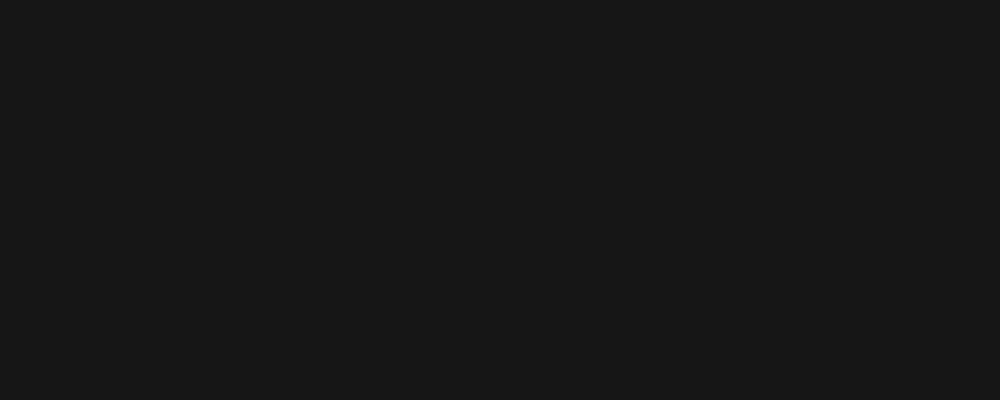

Hand-writing tape scripts
tape-scripts.Rmdrecord_demo() and friends cover the typical case — type
a block of R code into a real REPL, get a GIF. When you outgrow that,
the underlying charmbracelet/vhs tape
syntax is more general than record_demo() exposes. This
vignette walks through the primitives you’ll want, the corners that
bite, and how to hand a tape file or string to
vhsr_run_tape().
When to leave record_demo() behind
record_demo() assumes you want to type R into a
freshly-spawned R REPL. Reach for hand-written tape when:
- You want to record a shell session (git, npm, pip, …) rather than R code.
- You need multi-shell setup before R starts — clearing the screen, exporting an environment variable, navigating into a project directory.
- You want fine-grained timing: per-key
Backspacecorrections, arrow-key navigation,Wait /regex/synchronisation against output. - You want multiple
Screenshotdirectives in a single recording for a flipbook.
For everything else, record_demo() saves typing.
The primitives, R-flavoured
The full vhs tape reference lives at the charmbracelet/vhs README; this is a working subset.
Set: terminal configuration
Set Shell "bash"
Set FontSize 22
Set Width 1200
Set Height 600
Set Theme "Catppuccin Mocha"
Set TypingSpeed 60msSet directives must come before any input
(Type, Enter, …). record_demo()
always emits them at the top of the tape.
Type: simulated keystrokes
Type "echo Hello"Type@<duration> overrides the global
TypingSpeed for one line:
Type@30ms "this types at 30ms per char"vhsR uses this for typing_speed_jitter.
Sleep and Wait
Sleep 800ms
Sleep 2sWait /regex/ blocks until the on-screen content
matches:
Type "long-running-command"
Enter
Wait /Done\.$/ # waits up to 15s by defaultUseful when the next typed input would be too early — for instance, waiting for an R prompt to redraw before continuing.
Hide / Show
Hide
Type "stuff that shouldn't appear in the recording"
Enter
ShowHide does not pause execution. The
shell still runs typed input; vhs just stops adding frames to the
output. record_demo() uses this to hide the
R --quiet --no-save (or arf, or
radian) startup.
Source, Env, Screenshot
Source "common-setup.tape" # include another tape file
Env DEMO_VAR "true" # env var for the spawned shell
Screenshot "frame.png" # save a PNG of the current frameScreenshot is what record_demo_screenshot()
calls through to.
Gotchas vhsR works around for you
Three corners of vhs tape syntax that vhsR papers over internally; you’ll want to copy the pattern when writing tape by hand.
-
Slashes in unquoted paths look like a
Waitregex literal. vhs parses/something/as a regex. So this fails:Output /tmp/demo.gif Screenshot /tmp/frame.pngQuote the paths:
Output "/tmp/demo.gif" Screenshot "/tmp/frame.png" -
Strings with double quotes inside
Typeneed backtick fallback:Type "x <- \"hello\"" # broken — vhs doesn't handle the escape Type `x <- "hello"` # works — vhs treats backticks as quotesvhsR:::quote_for_tape()picks the right form per line. Screenshotis occasionally racy. vhs takes the screenshot the moment the directive runs in the tape, but the headless renderer sometimes hasn’t repainted yet. Leave aSleep 200ms(or longer) immediately before eachScreenshotto be safe.
Running a hand-written tape
Pass a file path:
vhsr_run_tape("scripts/my-demo.tape")…or a multi-line string:
vhsr_run_tape('
Output "demo.gif"
Set Shell "bash"
Set FontSize 22
Type "echo Hello from a hand-written tape!"
Enter
Sleep 800ms
Type `ls -1 *.R | head -3`
Enter
Sleep 1s
')Both code paths go through the same vhs binary as
record_demo(), with the same vhsr_check() gate
and the same path resolution (vhsr_vhs_path() etc.).
Anything you can express in tape syntax, this function can run.
The example above produces:

Version pinning
vhsR’s vhsr_install() pins to a specific upstream vhs
version (DEFAULT_VHS_VERSION in R/install.R).
If you’ve written tape that relies on a newer vhs feature, install that
version explicitly:
vhsr_install(versions = list(vhs = "0.12.0"))…or point at a system-installed vhs by setting
vhsR.vhs_path / VHSR_VHS. See
?vhsr_vhs_path for the resolution chain.
See also
- vhs’s full primitive list: https://github.com/charmbracelet/vhs#vhs-command-reference
-
?vhsr_run_tape,?vhsr_install,?vhsr_vhs_path. -
vignette("recording-for-readme", package = "vhsR")andvignette("pacing-and-feel", package = "vhsR")for the typical-case workflows.